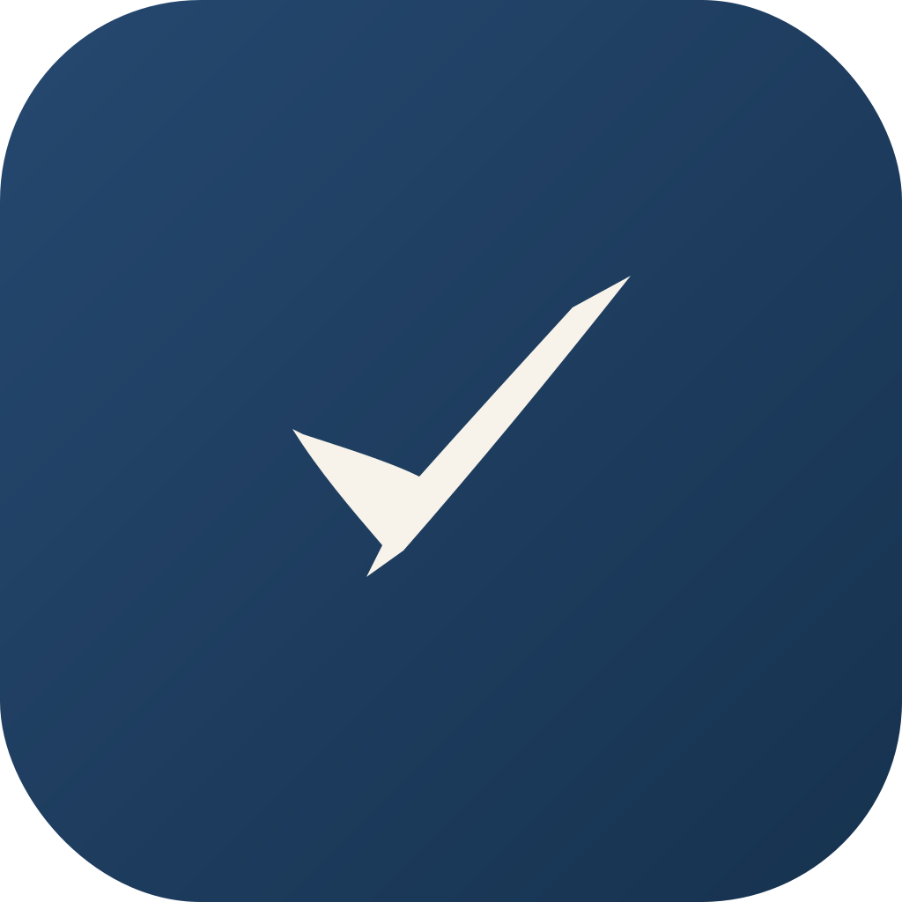

面向学生写作课的作业提交平台。标志是一道一笔写就的对勾——Right（对）与 Write（写）合于同一个手势：落笔、行笔、收锋，写完即判对。"中等硬"版，收笔利落，文气与可靠感兼具。
起笔（左下）：墨色最深，模拟笔尖触纸、墨量饱满。
行笔与顿挫（谷底）：转折处一个短回锋，是手写的呼吸，不是几何折角。
收锋（右上）：一刀斜切利落收住，墨色转淡——果断、可靠。
主色由深到浅的墨色渐变，正是"运笔"的痕迹。需要绝对简洁时用单色版。
